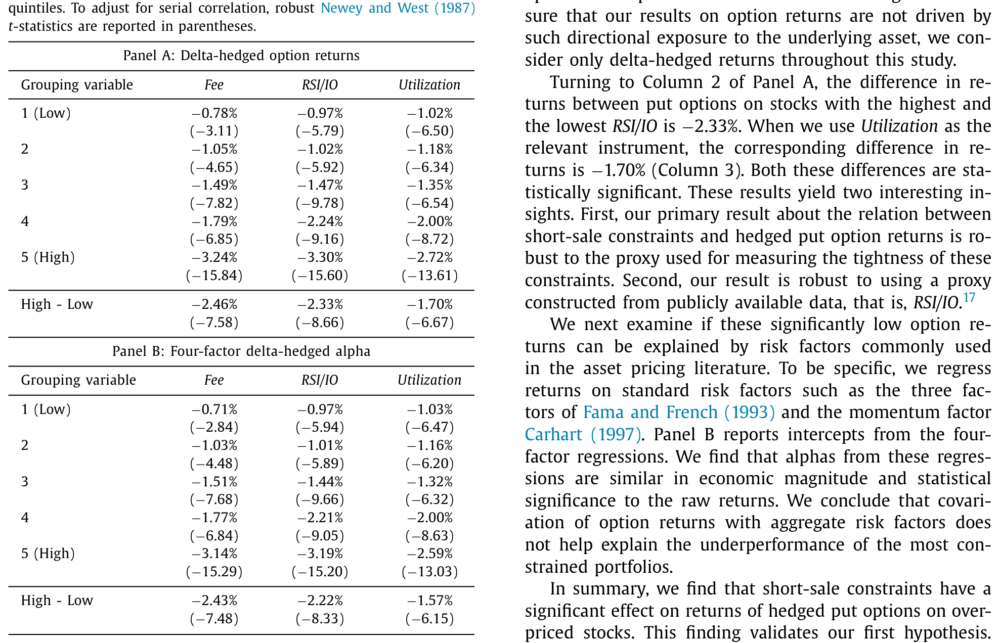
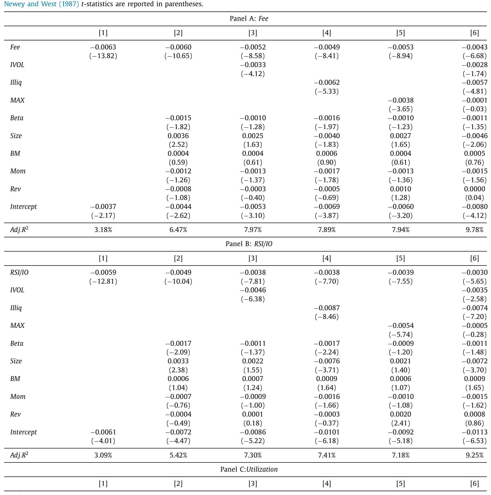
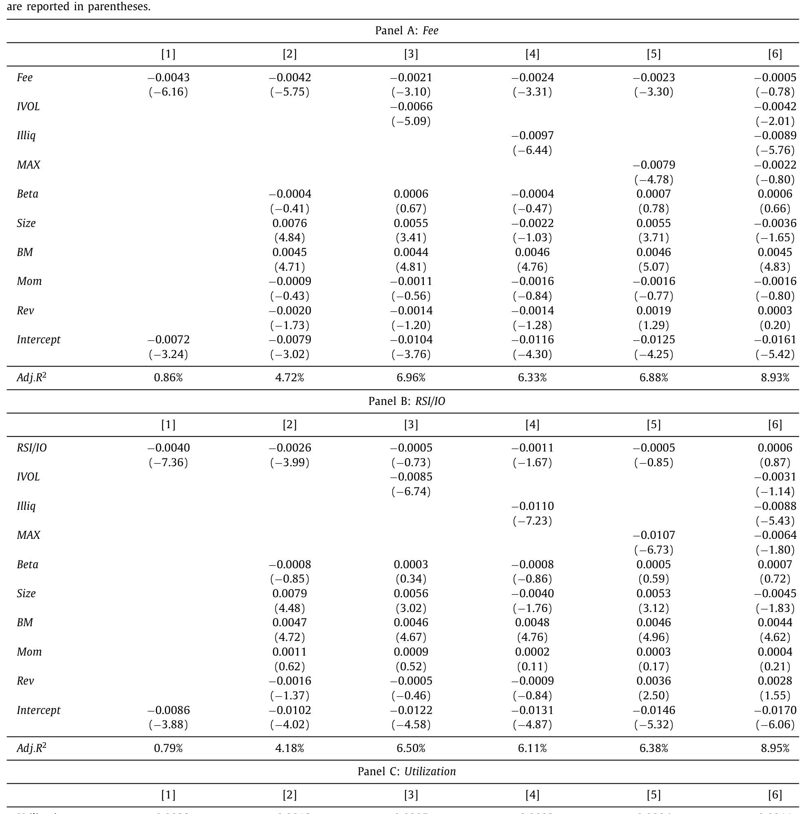
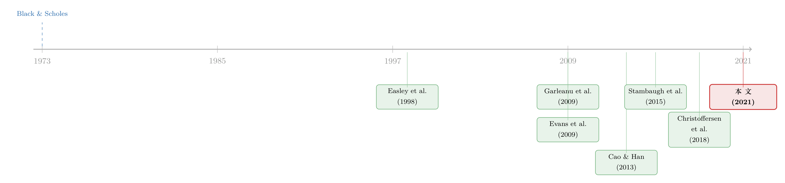

「卖空」卖不掉的风险，最后都摊进了看跌期权的价格里
本文读的是 Ramachandran & Tayal (2021, Journal of Financial Economics)：当一只股票被高估、却又难以卖空时，投资者会涌向看跌期权来表达看空观点，做市商则因为对冲成本上升而把溢价抬高——结果，这些被高估、又难借券的股票上的看跌期权，未来的对冲收益显著为负，最高与最低借券费分位的差额高达每月 −2.46%（t = −7.58）。而这一切，只在「高估 + 难卖空」这一角同时成立时才发生。
1 一个被忽略的「角」
先从一个常识说起。
经典的期权定价框架——Black-Scholes (1973)、Merton (1973)、Cox-Ross-Rubinstein (1979)——都建立在一个完美市场的假设上：做市商可以无成本、无摩擦地完美对冲手里的期权头寸。在这样的世界里，期权价格被无套利原理唯一地钉死，供给和需求根本无关紧要。谁多买了一手看跌期权，谁多卖了一手看涨期权，都改变不了它的价格。
可现实从来不是这样。市场不完全，做市商也对冲不干净。于是一个自然的问题是：如果做市商对冲不掉风险，那么期权价格里，是不是就藏着一笔「供求」的影子？ Garleanu, Pedersen & Poteshman (2009) 把这个想法做成了一个均衡模型——他们称之为基于需求的期权定价 (demand-based option pricing)：一个厌恶风险、无法完美对冲的做市商，会根据他面对的需求压力来给期权「定贵」或「定便宜」。需求越大，做市商越要为承担库存风险索取补偿，期权就越「贵」。
本文就站在这个理论的肩膀上，把目光投向一个看似不相关、却又精准对位的市场摩擦——卖空约束 (short-sale constraints)。
为什么是卖空约束？因为它同时扮演了两个角色，而这两个角色恰好就是需求定价模型的两根支柱。
卖空约束的「双重身份」是全文的灵魂：它既抬高了做市商对冲期权的成本（供给侧的市场不完美），又把看空的投资者从股票市场赶进了期权市场（需求侧的额外需求）。供求两端被同一个摩擦同时拨动——这正是 Garleanu et al. (2009) 框架里最干净的一种情形。
2 故事的主角：被高估、又难卖空的股票
接着，把场景具体化。
假设你坚信某只股票被高估了。你有三条路：直接卖空股票、买入看跌期权、或卖出看涨期权。最直接的当然是卖空股票。可问题来了——卖空是有代价的。借券费 (lending fee) 可能高得离谱，可借的券也可能早就被借光了。D'avolio (2002)、Geczy et al. (2002)、Jones & Lamont (2002) 这一串经典研究早就把「借券市场」的种种摩擦讲透了。
于是，当卖空这条路被堵死，看空的人会转向哪里？看跌期权。 Figlewski & Webb (1993) 早就指出，卖空需求一旦上升，看跌期权的需求和看涨期权的供给都会跟着上升。Easley, O'Hara & Srinivas (1998) 和 Johnson & So (2012) 更点出一个有趣的不对称：对于想表达看空观点的投资者，期权市场远比对想表达看多观点的人更有吸引力——因为看多的人本来就可以直接买股票，没必要绕道期权。
这就引出了本文的核心机制，我把它拆成一条因果链：
股票被高估 → 看空需求上升 → 卖空被约束 → 看空需求涌入看跌期权 → 看跌期权需求暴涨 → 做市商对冲成本同时上升（因为他对冲也要卖空那只难借的股票）→ 做市商抬高两样东西：期权溢价 + 报价价差 → 看跌期权变「贵」→ 未来对冲收益变负。
Christoffersen et al. (2018) 把做市商的这套补偿说得最透：「价差是一笔首付，预期收益是做市商每天收取的、用于管理或承接头寸风险的费用。」换句话说，做市商对你的看空需求一手收「过路费」（价差），一手收「停车费」（预期收益）。
但真正关键的一步在于：这条链条只在「高估」这一前提下才闭合。 如果一只股票是被低估的，投资者想表达的是看多观点，而看多根本不需要绕道期权（直接买股票即可），那么这条需求驱动的链条就断了。所以本文反复强调的核心，不是「卖空约束影响期权收益」这么一句泛泛之论，而是——
必须把卖空约束和「错误定价」交互起来看。 这是全文的题眼。
（关于「期权市场为什么能预测股票收益、其背后其实是一张借券账单」这一相邻而又互补的视角，可参见《期权里藏着的，不是先知，而是一张借券账单》；而做市商在不完全市场里如何给期权定价，亦可对照《每一张期权背后，站着一个怎样的投资者？》。）
3 三把尺子，量同一种「难」
要做实证，先得把两个抽象概念量化：一是「错误定价」，二是「卖空约束」。
错误定价，本文直接借用 Stambaugh, Yu & Yuan (2015) 的错误定价指标——把 11 个著名的股票异象组合起来，给每只股票算一个综合的「高估/低估」分数。Stambaugh et al. (2015) 当年是用这个指标和特质波动率 (IVOL) 交互，去解释 IVOL 与未来收益的负相关；本文则把它当作识别「高估股」与「低估股」的钥匙。
卖空约束，本文用了三把尺子，从不同角度量同一种「难」：
- 借券费 (lending fee)：来自 IHS Markit 的专有借贷数据。这是卖空者实际付出的成本，因而是最直接的卖空难度度量。
- RSI/IO：相对卖空兴趣 (relative short interest, RSI，即卖空股数 / 流通股数) 除以机构持股比例 (institutional ownership, IO)。其背后的逻辑很精巧——
Asquith et al. (2005)、Nagel (2005)、Beneish et al. (2015)指出，只有当卖空需求高 (RSI 高)、而可借券的供给低（IO 低，机构持股是可借券供给的代理）时，约束才真正具有约束力。所以 RSI/IO 才是「绑得紧不紧」的好度量。妙处在于它完全由公开数据算得。 - 利用率 (Utilization)：已借出股数 / 全部可借券供给，同样来自 IHS Markit。
Beneish et al. (2015)发现它与借券难度高度相关。
三把尺子互相印证，结论才站得住。
4 主结果：看跌期权的对冲收益，单调地「烂」下去
万事俱备。现在看核心结果。
本文研究的不是裸期权收益，而是 delta 对冲后的期权收益 (delta-hedged option returns)。为什么？因为裸期权收益里混着大量来自标的股票方向性暴露的波动，会把真正想看的「期权特有」的信号淹没。delta 对冲——并且每日再平衡——能把方向性暴露剔掉，留下纯粹由期权供求与波动率驱动的部分。这套构造沿用 Cao & Han (2013) 的标准做法：
把这三项加总，剩下的 \(\Pi\) 就是「对冲掉方向性之后，纯粹由期权贵贱决定」的那部分收益。如果一只期权被定得太贵，那么持有它、并把方向性对冲掉之后，这个 \(\Pi\) 就会是负的。 这正是我们要找的信号。
那么结果如何？
对高估股上的看跌期权，按借券费从低到高分成五组，对冲收益是负的、并且单调地越来越负。最高借券费组与最低组之间的差额是每月 −2.46%，t 值 −7.58。换两把尺子也一样：RSI/IO 给出 −2.33%（t = −8.66），利用率给出 −1.70%（t = −6.67）。再用 Carhart (1997) 四因子模型算 alpha，量级与显著性都还在——这说明，这种「烂收益」不是因为它扛了什么系统性风险因子，covariation 解释不了。

Table 2
这是全文最干净的一张图：随着卖空越来越难，被高估股票上的看跌期权，未来的对冲收益一格一格地往下掉。
5 顺着机制往下挖：需求和供给，都对得上
一个单调关系还不足以服人。如果这条因果链是真的，那么链条上的每一环——投资者需求、做市商反应——都应该能在数据里被看见。本文最漂亮的地方，正是它没有止步于「收益」，而是把整条机制一节一节地验了过去。作者把这称为一个「统一的视角」(unified view)，这也是本文自认的首要贡献。
先看需求侧。 用相对未平仓量 (relative open interest，未平仓合约 / 流通股数) 作为期权需求的代理（沿用 Han (2008)、Cao & Han (2013)）。结果：借券费最高组的相对未平仓量，约是最低组的 2.5 倍。换另两把尺子，关系更强。
但未平仓量只是「有多少合约」，并不告诉你是谁在买。于是作者动用了一份更精细的数据——来自国际证券交易所 (International Securities Exchange, ISE) 的带方向成交量，算出订单失衡 (order imbalance, OIB)，即终端用户的净买压。结果令人意外：在最受卖空约束的高估股上，OIB 显著为正——终端用户是这些看跌期权的净买入者。
为什么说意外？因为几乎所有既有研究（Lakonishok et al. 2007、Garleanu et al. 2009、Muravyev 2016、Christoffersen et al. 2018）都发现：终端用户平均是股票期权的净卖出者。本文并不与之矛盾——全样本平均 OIB 确实为负——但作者精准地切出了一个「投资者反而在净买入看跌期权」的角落，而这个角落，恰恰就是「高估 + 难卖空」的那一格。机制的需求侧，对上了。
再看供给侧，也就是做市商怎么回应。 本文预测做市商会同时抬高两样东西。
其一，期权的「贵」。用隐含波动率与历史波动率之差 (IV − HV spread) 度量期权的昂贵程度（Garleanu et al. 2009、Goyal & Saretto 2009）。高估股的看跌期权上，最高与最低借券费分位之间的 IV−HV 差额是惊人的 14.65%（t = 9.20）；RSI/IO 给 14.20%（t = 11.92），利用率给 12.30%（t = 10.74）。也就是说，越难借的股票，它的看跌期权越贵——这与 Evans et al. (2009)、Lin & Lu (2016)、Atmaz & Basak (2019) 一脉相承。
其二，报价价差。最受约束的股票，其看跌期权的买卖价差也显著更高，与 Evans et al. (2009)、Battalio & Schultz (2011)、Christoffersen et al. (2018) 吻合。

Table 5
至此，从「投资者多买」到「期权变贵、价差变宽」再到「未来对冲收益变负」，整条链每一环都在数据里留下了脚印。
6 反转一：会不会只是「套利限制」的老故事？
到这里，一个挑剔的读者会问：你说的这套「卖空约束 → 看跌期权变贵」，会不会只是把一个已知的东西换了个名字？毕竟，难卖空的股票往往也是特质波动率高、流动性差、彩票性质强的股票——而这些，恰恰是文献里反复出现的套利限制 (limits to arbitrage) 代理变量。
这是对识别的最严肃的一击，作者也正面接了下来。
第一步，控制公司层面的特征：beta、规模、账面市值比、短期反转、中期动量（Bali et al. 2011 的标准集合）。几乎没影响。
第二步，控制套利限制代理：标的股的特质波动率与非流动性（Cao & Han 2013）、以及彩票特征（Byun & Kim 2016，Boyer & Vorkink 2014 指出彩票性质会吸引追逐偏度的投资者、本身就是一种套利限制）。这一下，关系被削弱了 30–50%。
削弱幅度不小，但作者很诚实地指出：这并不意外。Duan et al. (2010) 早就发现，高 RSI 的股票本就倾向于有高特质波动率——这两组变量天然纠缠。真正重要的是：即便控制了这些，关系依然在经济与统计上显著。 最受约束的股票上的看跌期权，仍然比最不受约束的跑输约 1%–1.75%（视度量而定）。机制没有被「套利限制」吃掉，它有自己独立的一席之地。
7 反转二：把「低估股」放进来，关系就垮了——这正是要点
如果你只读到这里，可能觉得本文不过是「又一个卖空约束影响期权」的故事。但作者埋下的真正杀招，是用低估股作对照。
记得第 2 节那条因果链吗？它的闭合必须依赖「高估」这个前提。如果这套机制是真的，那么把同样的检验搬到低估股上，关系就应该大幅减弱——因为看多的人不需要绕道期权。
数据完全照做了预言：对最被低估的股票，最受约束与最不受约束分位之间的看跌期权收益差，只有最高估股对应差额的约三分之一。更关键的是——这个对低估股的弱关系，根本扛不住套利限制变量的控制，一控制就不显著了。
这是全文逻辑闭环的最后一块砖：卖空约束本身不是主角，「卖空约束 × 错误定价」的交互才是。 据作者所知，这是第一篇把错误定价作为条件变量、来检验卖空约束对期权市场影响的研究。
8 看涨期权：为什么这里反而「说不清」？
最后一块拼图是看涨期权。直觉上，如果看跌期权因约束而变贵，看涨期权会怎样？
答案是：含糊。 本文坦率地承认，看涨期权上有好几股相互冲突的力量在拉扯：
- 高估股看空需求大 → 看涨期权供给过剩 → 压低看涨期权价格；
- 若投资者净卖出看涨，做市商净买入，对冲需卖空标的 → 但标的难借 → 对冲成本高 → 抬高看涨期权价格；
- 若看跌相对变贵，会引发看跌-看涨平价 (put-call parity) 偏离，套利者想买入合成看跌（含买入看涨）→ 推高看涨期权需求 → 抬高价格；但对难卖空的股票，这股力量又被大大削弱（
Lamont & Thaler 2003、Ofek et al. 2004、Evans et al. 2009都说过，约束本身会吓退套利者）。
几股力量方向相反，孰胜孰负是个纯实证问题。结果：高估股里，最高与最低借券费分位的看涨期权对冲收益差是每月 −1.28%，统计上显著，但量级只有看跌期权的约一半。而且，一旦控制套利限制变量，三把尺子无一保持显著。
作者的结论很克制：控制套利限制后，卖空约束与 delta 对冲看涨期权收益之间，没有稳健的关系。这种「看跌强、看涨弱」的不对称，恰恰又回到了 Easley et al. (1998) 那个核心洞见——期权市场，对看空的人，比对看多的人更要紧。

Table 8
9 文献脉络
把这条研究放回它生长的土壤里看，会更清楚它补上的是哪一块。
最上游，是 Black & Scholes (1973) 与 Merton (1973) 的完美市场范式——价格由无套利唯一决定，供求无关。这套范式统治了很久，直到一批研究开始追问「不完全市场里，中介到底要不要紧」。Bollen & Whaley (2004) 发现需求会改变隐含波动率微笑；Garleanu, Pedersen & Poteshman (2009) 把它升华为基于需求的期权定价均衡模型——这是本文最直接的理论母体。Muravyev (2016)、Christoffersen et al. (2018) 接着把做市商的库存风险、价差与预期收益的关系一一坐实。
另一条线，是卖空约束如何渗进期权市场。Figlewski & Webb (1993) 与 Easley et al. (1998) 奠定了「看空者绕道期权」的不对称直觉；Evans et al. (2009)、Lin & Lu (2016)、Atmaz & Basak (2019) 则证明难借股票的看跌期权 IV 与价差更高。

还有第三条线，是期权收益的横截面可预测性：Goyal & Saretto (2009) 的波动率误估、Cao & Han (2013) 的特质波动率、Boyer & Vorkink (2014) 的彩票偏度、Byun & Kim (2016) 的博彩偏好。本文正坐落在这三条线的交汇点上：它借 Garleanu et al. (2009) 的需求逻辑、Evans et al. (2009) 的卖空—期权证据、以及 Stambaugh et al. (2015) 的错误定价指标，第一次把「错误定价」作为条件变量，给出了一个供求两端都自洽的统一视角。
（这条期权收益可预测性的线索，若想看因子模型如何应对期权「短命」的难题，可参见《期权太「短命」，因子模型怎么追得上它？》；而散户需求如何反向推歪整张波动率曲面，可对照《当波动率曲面被「散户」推歪》。）
10 评论与延伸（Q&A + 研究方向）
(a) 几个可能的疑问
Q：这跟「卖空约束让股票被高估」（Miller 1977 那一脉）有什么不同？
那一脉讲的是卖空约束如何作用于股票价格；本文讲的是同一个约束如何作用于期权价格与未来收益。更关键的差别在条件化：本文证明，只有把约束与错误定价交互，关系才浮现——单看约束本身，故事是不完整的。
Q：delta 对冲后的负收益，会不会只是因为这些期权扛了某种系统性风险？
作者用
Carhart (1997)四因子算 alpha，量级和显著性都还在，说明 covariation 解释不了。换句话说，这不是「风险补偿」，更像是做市商对承接需求压力索取的「服务费」。
Q：30–50% 的削弱幅度，会不会说明结果大半其实是套利限制驱动的？
削弱确实可观，但作者诚实地解释了为什么：高 RSI 的股票本就倾向高特质波动率（
Duan et al. 2010），两类变量天然纠缠，部分重叠是预料之中的。要点是控制之后仍显著（看跌期权仍跑输 1%–1.75%），证明它有独立贡献。
Q：「终端用户净买入看跌期权」会不会与既有文献矛盾？
不矛盾。全样本平均 OIB 仍为负（终端用户平均是净卖方，与
Garleanu et al. 2009等一致），本文只是切出了一个 OIB 为正的特定子样本——「高估 + 难卖空」的那一格。是「条件化」让这个反直觉的事实浮出水面。
Q：为什么看涨期权的结果反而「不稳健」，这是缺陷还是特征？
是特征。看涨期权上有供给过剩、对冲成本、平价套利三股相反的力量，理论本就预测它「说不清」。看涨弱、看跌强的不对称，恰好印证了「期权市场对看空者更要紧」这一核心机制，而非削弱它。
Q：样本始于 2006，会不会太短、且赶上了金融危机？
2006–2017 共 12 年，受限于 IHS Markit 借贷数据的起始年份。危机期间卖空禁令（2008）确实是个扰动，但主结果在多把尺子、多重控制下都稳健；不过若能拉长样本、或剔除危机窗口做稳健性，说服力会更强。
(b) 几个可能的研究问题与提案
1. 把同一套「约束 × 错误定价」逻辑搬到公司债期权 / CDS 期权上
【经济故事】公司债与 CDS 市场同样存在做空摩擦（券源稀缺、回购市场约束），且做市商库存风险更突出。若信用衍生品的需求压力也随「高估 + 难做空」而上升，其隐含波动率与对冲收益应呈现类似的横截面模式。 【可行性】中。需要 CDS 期权或债券期权数据（流动性与覆盖度是硬约束），错误定价可用信用利差相对模型隐含值的偏离构造。识别上可借鉴本文的分位排序 + Fama-MacBeth，但样本规模可能偏小。
2. 外资持有人结构如何改变借券供给，进而传导到期权价格
【经济故事】本文用机构持股 (IO) 作为可借券供给的代理。但不同类型的机构（尤其外资被动 vs 主动）出借意愿差异极大。若能把 IO 拆成「愿意出借」与「不愿出借」两块，约束的度量会更锋利，期权价格的反应也应更清晰。 【可行性】高。借券供给可由 IHS Markit 的 lendable supply 直接观测，持有人类型可用 13F + FactSet 拼接。识别策略可沿用本文框架，把 IO 替换为「外资可借券份额」。
3. 指数纳入 / 剔除作为借券供给的外生冲击
【经济故事】股票被纳入主流指数会显著改变其被动持有比例，从而改变可借券供给——这是一个对单只股票近乎外生的约束冲击。若约束确实通过本文机制定价期权，纳入事件前后，高估股的看跌期权贵贱与对冲收益应有可观测的跳变。 【可行性】高。指数重构日期公开，事件研究设计干净，正是本文在引言里点名建议的方向（「可用于事件研究以洞察公司事件前后的期权市场动态」）。识别力强，doable。
4. 监管冲击（Reg SHO 试点）下的「约束 × 错误定价」交互
【经济故事】
Chen et al. (2020)已用 Reg SHO 试点研究卖空约束放松对期权交易量与 IV 的影响。但他们未做错误定价的条件化。把本文的交互逻辑叠加到这个准自然实验上，可以把「相关」推向更接近「因果」的识别。 【可行性】中高。Reg SHO 试点名单与时点公开，DiD 框架成熟；难点在错误定价指标在试点样本期（更早）的可得性与构造一致性。
11 我的判断
这篇论文最值得称道的，不是任何单一系数，而是它的叙事完整性。它没有满足于「卖空约束 → 看跌期权收益负」这样一个 reduced-form 关联，而是把需求侧（开仓量、OIB）、供给侧（IV−HV 价差、买卖价差）、以及条件化（高估 vs 低估、看跌 vs 看涨）一节一节地铺开，让整条机制在数据里自我印证。当低估股、看涨期权这两个「对照组」都按理论预言的方向「失效」时，识别的可信度被显著推高了——这是一种很高级的实证策略：用机制该在哪里消失来证明它在哪里存在。
但我也有两处保留。
其一，识别终究是横截面排序 + Fama-MacBeth，本质上仍是相关性的精致化，而非外生冲击。控制套利限制后 30–50% 的削弱提醒我们：卖空约束、特质波动率、流动性这几样东西高度共线，谁是真正的「第一性」驱动，单凭这套设计难以彻底分清。我更想看到一个像 Reg SHO 那样的外生约束变动，叠加错误定价的条件化，把因果再拧紧一格。
其二，样本期偏短且含危机。2006–2017 受制于借贷数据起点，且 2008 的卖空禁令是个不小的结构性扰动。主结果虽稳健，但若能在剔除危机窗口、或拉长到更近年份后复现，结论会更让人安心。
后续我最想看到的，是把这套逻辑迁移到信用市场——公司债与 CDS 的做空摩擦更重、做市商库存风险更显性，若「约束 × 错误定价」的交互在那里也成立，这篇论文的贡献就从「期权市场的一个有趣发现」升格为「不完全市场里需求定价的一条普适规律」。这，才是它真正的潜力所在。
参考文献
Atmaz, A., & Basak, S. (2019). Option prices and costly short-selling. Journal of Financial Economics 134(1), 1–28.
Bali, T. G., Cakici, N., & Whitelaw, R. F. (2011). Maxing out: Stocks as lotteries and the cross-section of expected returns. Journal of Financial Economics 99(2), 427–446.
Battalio, R., & Schultz, P. (2011). Regulatory uncertainty and market liquidity: The 2008 short sale ban's impact on equity option markets. Journal of Finance 66(6), 2013–2053.
Beneish, M. D., Lee, C. M., & Nichols, D. C. (2015). In short supply: Short-sellers and stock returns. Journal of Accounting and Economics 60(2–3), 33–57.
Black, F., & Scholes, M. (1973). The pricing of options and corporate liabilities. Journal of Political Economy 81(3), 637–654.
Boyer, B. H., & Vorkink, K. (2014). Stock options as lotteries. Journal of Finance 69(4), 1485–1527.
Byun, S. J., & Kim, D. H. (2016). Gambling preference and individual equity option returns. Journal of Financial Economics 122(1), 155–174.
Cao, J., & Han, B. (2013). Cross section of option returns and idiosyncratic stock volatility. Journal of Financial Economics 108(1), 231–249.
Carhart, M. M. (1997). On persistence in mutual fund performance. Journal of Finance 52(1), 57–82.
Chen, Y. W., Chen, S. S., & Chou, R. K. (2020). Short-sale constraints and options trading: Evidence from Reg SHO. Journal of Financial and Quantitative Analysis 55(5), 1555–1579.
Christoffersen, P., Goyenko, R., Jacobs, K., & Karoui, M. (2018). Illiquidity premia in the equity options market. Review of Financial Studies 31(3), 811–851.
D'avolio, G. (2002). The market for borrowing stock. Journal of Financial Economics 66(2–3), 271–306.
Duan, Y., Hu, G., & McLean, R. D. (2010). Costly arbitrage and idiosyncratic risk: Evidence from short sellers. Journal of Financial Intermediation 19(4), 564–579.
Easley, D., O'Hara, M., & Srinivas, P. S. (1998). Option volume and stock prices: Evidence on where informed traders trade. Journal of Finance 53(2), 431–465.
Evans, R. B., Geczy, C. C., Musto, D. K., & Reed, A. V. (2009). Failure is an option: Impediments to short selling and options prices. Review of Financial Studies 22(5), 1955–1980.
Figlewski, S., & Webb, G. P. (1993). Options, short sales, and market completeness. Journal of Finance 48(2), 761–777.
Garleanu, N., Pedersen, L. H., & Poteshman, A. M. (2009). Demand-based option pricing. Review of Financial Studies 22(10), 4259–4299.
Goyal, A., & Saretto, A. (2009). Cross-section of option returns and volatility. Journal of Financial Economics 94(2), 310–326.
Han, B. (2008). Investor sentiment and option prices. Review of Financial Studies 21(1), 387–414.
Johnson, T. L., & So, E. C. (2012). The option to stock volume ratio and future returns. Journal of Financial Economics 106(2), 262–286.
Jones, C. M., & Lamont, O. A. (2002). Short-sale constraints and stock returns. Journal of Financial Economics 66(2–3), 207–239.
Lin, T. C., & Lu, X. (2016). How do short-sale costs affect put options trading? Evidence from separating hedging and speculative shorting demands. Review of Finance 20(5), 1911–1943.
Merton, R. C. (1973). Theory of rational option pricing. Bell Journal of Economics and Management Science 4(1), 141–183.
Muravyev, D. (2016). Order flow and expected option returns. Journal of Finance 71(2), 673–708.
Stambaugh, R. F., Yu, J., & Yuan, Y. (2015). Arbitrage asymmetry and the idiosyncratic volatility puzzle. Journal of Finance 70(5), 1903–1948.